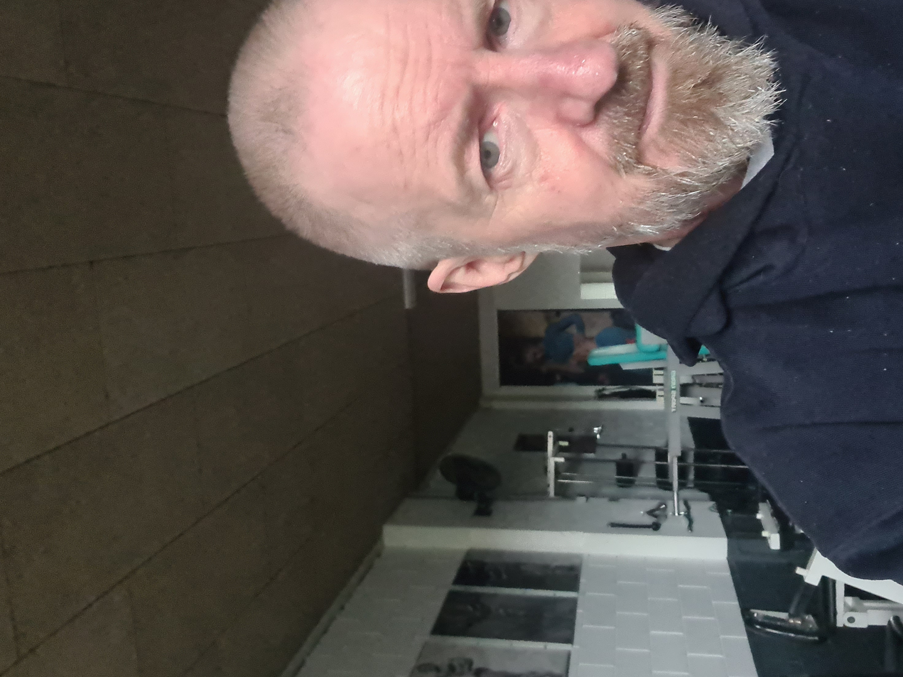

Over mijzelf
Ik ben Han van der Heide, alweer een aardig tijdje in de WAO, ongeveer evenzolang weduwnaar.
Mijn dagbesteding bestaat uit sportschool en huishoudelijk werk in de ochtend, studeren in de middag
en 's avonds speel ik video games (Elder Scrolls Online). Ook lees ik veel op RoyalRoad en r/hfy (Reddit).
Fantasy, scifi, isekai, litRPG en wuxia zijn mijn lievelingsgenres (escapism goes brrrrtttt lol)
Ik ben helaas ernstig ziek, maar m'n levensverwachting is dusdanig gestegen dat ik weer toekomstplannen durf te maken.
Krachttraining duurt wat langer allemaal, ik doe minder reps per set, meer sets en neem langere pauzes tussen sets.
Omdat ik ondertussen de eigenaar van de gym goed ken heb ik de sleutel gekregen, zodat ik buiten openingstijden kan trainen.
Het is namelijk best vervelend als er iemand op je staat te wachten, zo van "duurt het nog lang, broeder?" en dat
gebeurde regelmatig.
Hiernaast een foto genomen in de sportschool, ik ben denk ik op weg naar de uitgang. Aan m'n hoodie te zien is het winter
en het is licht, dus ik heb mijn training al achter de rug. Ik train zes dagen in de week, een push-pull-legs split.